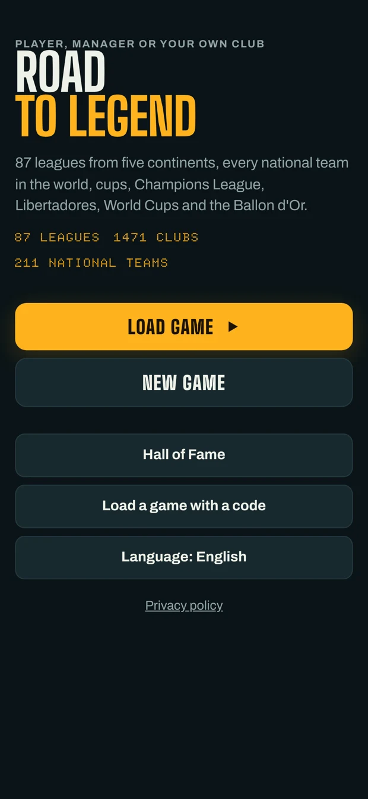
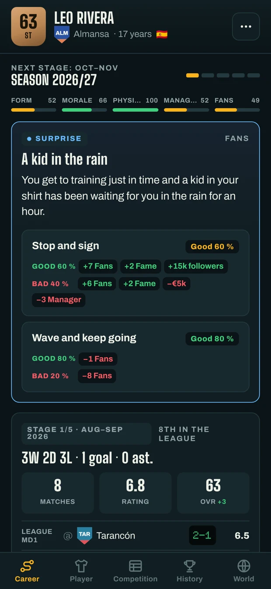
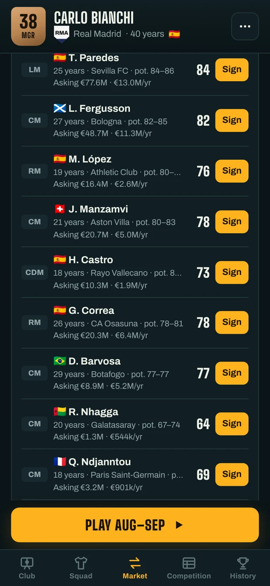
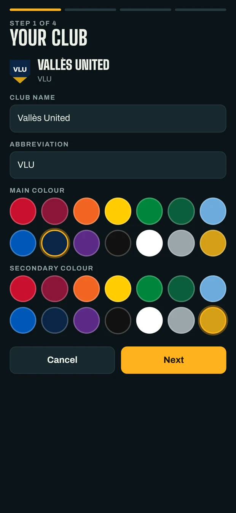
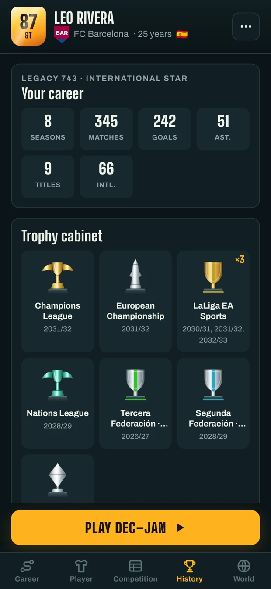
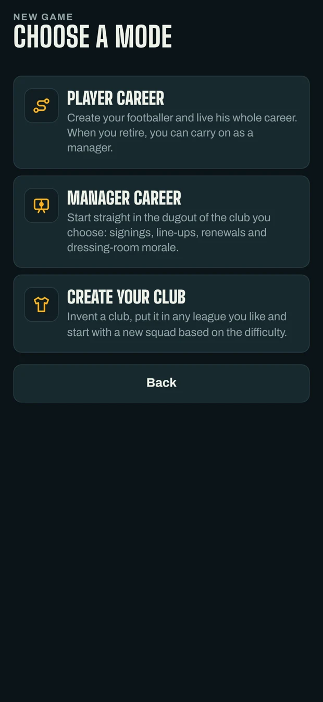
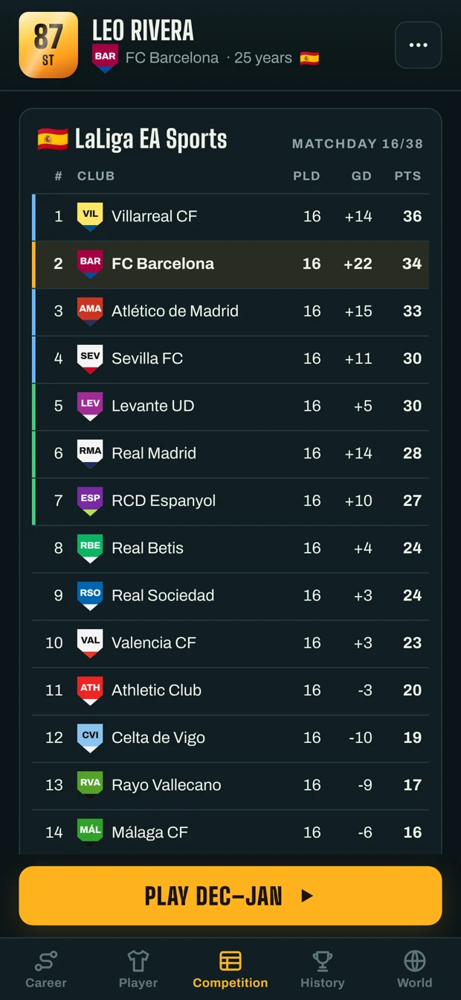

Crea a tu futbolista y llévalo hasta la leyenda.
Ficha por un club, vive los partidos en directo con la nueva simulación 3D o 2D y decide cada paso de tu carrera: contratos, prensa, vestuario y selección. O siéntate en el banquillo y dirige tú al equipo.
Gratis y sin crear cuenta. Tus partidas se guardan en este navegador.
El camino empieza aquí
Mira el tráiler oficial y descubre cómo una decisión puede cambiar toda una carrera.
↗ Ver partido interactivoElige cómo jugar
Tres formas de empezar. Puedes tener varias partidas a la vez y cambiar de una a otra cuando quieras.
-
Carrera de jugador
Crea a tu futbolista y vive su carrera entera, de la cantera a la retirada. Cuando cuelgues las botas, puedes seguir como entrenador.
-
Carrera de míster
Empieza en el banquillo del club que elijas: fichajes, alineación, renovaciones y moral del vestuario. Y cambios tácticos en pleno partido.
-
Crea tu club
Inventa un club con su nombre, colores y escudo, ponlo en la liga que quieras y súbelo desde abajo con una plantilla nueva.
Todos los modos se pueden jugar en fútbol masculino o femenino.
Así se juega
Una semana de juego cabe en un toque. Lo importante, el partido y las decisiones, se ve con calma.








Lo que trae una temporada
Ligas, copas y selecciones de medio mundo, con nombres inventados inspirados en el fútbol real.
- Partidos en 3D y 2D en directo
- Disfruta de la nueva simulación 3D con física realista de balón, animaciones y ambiente de estadio, o cambia al campo 2D táctico en cualquier momento. Penaltis y faltas los tiras tú.
- Decisiones fuera del campo
- Ruedas de prensa, ofertas, polémicas en el vestuario y momentos que cambian una carrera.
- Tu mercado
- Negocia contratos, pide el traspaso o, como míster, ficha y vende para cuadrar las cuentas.
- Logros y Salón de la fama
- Decenas de logros, trofeos y récords que se quedan aunque empieces otra partida.
- En cinco idiomas
- Castellano, inglés, alemán, italiano y francés. Cámbialo cuando quieras desde el menú.
- Tu partida, contigo
- Copia tu partida con un código y sigue jugando en otro navegador o en la app de Android.
El primer partido empieza ya
No hay que instalar nada ni registrarse. Si cierras la pestaña, la partida te espera donde la dejaste.